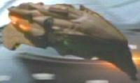
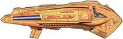

Kazon - Astronavi varie |
| [Senza Nome] Nave ammiraglia comandata da Jabin dei Kazon Ogla. | Caretaker |
 [Senza
Nome] Nave contro cui
Chakotay fa schiantare la
nave Maquis per proteggere la Voyager. Danneggiata dall'impatto,
si distrugge quando colpisce la
stazione spaziale nacene. [Senza
Nome] Nave contro cui
Chakotay fa schiantare la
nave Maquis per proteggere la Voyager. Danneggiata dall'impatto,
si distrugge quando colpisce la
stazione spaziale nacene. |
Caretaker |
| [Senza Nome] Incursore Kazon Nistrim Comandato dal Primo Maje Jal Culluh, attacca la Voyager nel 2372 e riesce ad abbordarla rubando uno dei moduli di il teletrasporto. | Maneuvers |